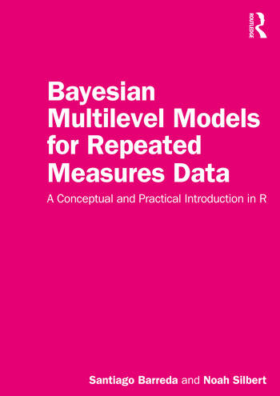

Bayesian multilevel models for repeated-measures data: A conceptual and practical introduction in R
Preface

Expected: Spring 2023
This book presents an introduction to the statistical analysis of repeated measures data using Bayesian multilevel regression models. Our approach is to fit these models using the brms package and the Stan programming language in R. This book introduces mathematical and modeling concepts in plain English, and focuses on understanding the visual/geometric consequences of different regression model structures rather than on rigorous mathematical explanations of these.
Statistical modeling is as much a coding challenge as it is a mathematical challenge. As any programmer with some experience knows, copying existing scripts and modifying them slightly is an excellent way to learn to code, and often a new skill can be learned shortly after an understandable example can be found. To that end, rather than use a different toy data set for every new topic introduced, this book presents a set of fully worked analyses involving increasingly complicated models fit to the same experimental data.
We were both trained as linguists and the experiment we analyze in this book is an experiment investigating a ‘linguistic’ research question (kind of). However, the sorts of models described in this book are useful for researchers in psychology, cognitive science, and many related (and unrelated) disciplines. In general, the information in this book will be useful to anyone that has similar sorts of data that they want to analyze regardless of the specifics of their research areas, and it should be straightforward to extend the concepts outlined in this book to models that predict different sorts of data.
Bayesian Multilevel models and repeated measures data
A more complete explanation of the following is presented in chapters 2 to 4, however, we can say something about this here. A Bayesian model is one which bases reasoning on posterior probabilities rather than likelihoods. A multilevel model is one in which you simultaneously model variation in your data, and in your parameters. There a ‘multi(ple) levels’ because there is variation in the data (conceptually ‘below’), and in the parameters of the probability distributions generating this data (conceptually ‘above’). A Bayesian multilevel model puts these concepts together and uses posterior probabilities to make inferences about variation in data and in parameters.
Repeated measures data is data where multiple observations come from the same ‘source’ (discussed in more detail in section 4.2). Basically, any time you have data with more than one observation from any given source, you have repeated measures data. Repeated measures data is very common in linguistics, and the norm in many areas of research. For example, you might ask participants in an experiment to hit a button as soon as they hear a buzz, and repeat this for 100 trials per participant. Repeated measures data can naturally lead to independent data-level variation (the lower level) and parameter level variation (the upper level). For example, reaction times to hit a button vary within-participants (the data/lower level), but average reaction times will also likely vary between participants (the upper/parameter level) in a systematic manner. Using multilevel models to analyze repeated measures data lets you independently model these two levels of variation. Using a Bayesian multilevel model allows you to build flexible models that provide you with all sorts of useful information.
One obstacle to the proper analysis of repeated measures data is that this requires models that are relatively ‘complicated’ and therefore usually not taught at the beginner level. In order to learn how to model repeated measures data, a student is often first expected to learn ‘traditional’ statistical approaches and designs. After this foundation is laid, the student can then move to the sorts of models they can actually use for their work, mainly multilevel models that can handle repeated measures data. This approach has several drawbacks: It takes a long time, spends substantial energy on statistical approaches that most will rarely if ever use in their work, and front-loads difficult and abstract concepts before students can start working with data they really understand. As a result, students may become discouraged, become convinced that they’re ‘not good at math’, and may not realize how much they already intuitively understand about statistics.
This book starts with multilevel models and doesn’t look back. It focuses on a realistic and complicated data set, and focuses from (nearly) the start (chapter 4) on realistic models that could actually be used in modern, publishable research.
What’s missing from this book
There was a time when every other Spider-Man movie started with Peter Parker being bitten by the spider and getting his powers, costume, etc. Filmmakers didn’t trust that viewers know how Spider-Man got his powers, or that they could easily get this information somewhere, and so chose to spend precious movie minutes retelling what is perhaps the least interesting Spider-Man story. The problem is, the longer you spend on Peter Parker getting bit, the less time you can spend on Spider-Man swinging between buildings at high velocity. In the same way, many statistics books tell the statistics ‘origin story’ over and over, to the detriment of getting to the sorts of really interesting models people actually need. In other cases, when complicated models are discussed they are presented in a style and language only appropriate for an advanced reader, or with simple examples using toy data.
This book tries to find the ‘Goldilocks zone’ between too much and too little information: We assume you know who Spider-Man is or can easily find his origin story. This book omits a basic introduction to R in addition to a detailed explanation of how the code used in the book works. It also omits a lot of explanation that is required to ‘really’ understand topics, for example correlation, which we introduce but only spend a few pages on. However, there are hundreds or thousands of excellent introductions to R, and even more places to find good information about basic statistical concepts like correlations. Rather than spend precious book pages on really getting into every topic that comes up, this book aims to spend as much time as possible flying between buildings at high velocity, or the statistical equivalent.
As a result, this book is narrowly focused on a specific subject: Introduction to Bayesian multilevel models for repeated measures data. It’s not a general introduction to statistics nor to Bayesian models, or any number of other things. This narrow(ish) focus is both a strength and a weakness. We feel that it is a strength because it allows this book to cover material and provide examples of the sorts of models that are frequently needed in many disciplines, but also rarely discussed in statistics textbooks (often missing entirely or featuring in 1-2 chapters tucked away at the back). It’s a weakness because it means the book is to some extent ‘incomplete’ in terms of providing a full introduction to the field of (Bayesian) statistics, as noted above. As a result, the ideal reader will know a little about statistics or have some resources on introductory statistics on hand (e.g. books, Wikipedia, etc.) to look up things they might not know or understand. Similarly, the book does not spend much time explaining how the things we do in R work, though examples of everything are given and the code is commented and made as transparent as we could.
At the other end of the spectrum, this book is also missing many ‘more complicated’ but useful topics. For example, the book is entirely focused on linear modeling and does not discuss non-linear modeling. We also do not discuss missing data, multivariate dependent variables, or transformations of the dependent variables, among other topics. However, all of these things, and more, are easily doable using Stan and brms.
Statistics as Procedural knowledge
Although statistical knowledge might seem like declarative knowledge, in many ways it is much more similar to procedural knowledge. You would never read a chapter from a French textbook once and expect to have memorized all the vocabulary and irregular forms. Similarly, you would never practice a piano piece a single time and assume that you are just ‘bad at the piano’ because you can’t play it flawlessly. And yet a student may read a chapter from this book once and feel disappointed that they do not already understand the concepts.
We suggest thinking of acquiring statistical knowledge like learning a language, or musical instrument. It is normal, and in fact should be expected, that the reader will need to read some parts of the text multiple times, and practice, before being able to really understand all of the concepts presented here. We do not think getting good at statistics is about ‘brain power’ (whatever that is), as much as it is about a desire to learn, a genuine interest in the topic, and perseverance. In this way, learning statistics is very much like learning a language or an instrument. Buying a piano doesn’t make you good at the piano, only practice does. Reading a grammar of Spanish or even moving to Spain will not teach you Spanish, only getting out there and talking to people will. To get good at statistics, you need to practice using statistics.
To that end, this book provides examples of analyses and data that can be re-analyzed in many similar yet different ways. As a result, readers have an opportunity to fit several parallel models, interpret them, make sure they understand them, and so on. In doing so, and in returning to challenging content periodically to ‘practice’, we hope that readers will be able to support their understanding of the content in the book.
Practice vs brain power
John von Neumann was perhaps the greatest mathematical mind the world has ever seen. A glance at his contributions to mathematics on his Wikipedia page reveals an astonishing breadth and depth of mathematical abilities. Some quotes from his contemporaries about von Neumann (from his Wikipedia page):
“I have sometimes wondered whether a brain like von Neumann’s does not indicate a species superior to that of man” - Hans Bethe
“Johnny was the only student I was ever afraid of. If in the course of a lecture I stated an unsolved problem, the chances were he’d come to me at the end of the lecture with the complete solution scribbled on a slip of paper.” - George Pólya
And yet when a graduate student complained about not understanding some mathematical abstraction, von Neumann is said to have replied:
- “Young man, in mathematics you don’t understand things. You just get used to them” - John von Neumann
This was von Neumann’s experience, it has certainly been our experience, and it will likely be yours. Some things will make no sense the first, second, third, …, maybe even the tenth time you see them. And then one day they will. It won’t be clear when or why they changed from confusing to sensible, but all of the sudden a combination of repetition, practice and time will make the difference. It is likely that no amount of thinking and raw brain power alone will help you understand statistics right away on a first pass.
That being said, many of the things we talk about in this book will come up in every chapter, so if things don’t all make sense right away that’s fine, since you will have plenty of chances to get used to them. Things will make more sense bit by bit as we learn how to use more and more complicated models. After reading a few chapters you should come back and read earlier chapters again (and again). You may notice that a lot of things are discussed in an earlier chapter that you did not notice the first time you read it.
How to use this book
The chapters of this book, from chapter 3 on, are organized in terms of regression model components, e.g., intercepts, slopes, interactions, ‘random’ effects, and so on. We will discuss how these relate to experimental designs, statistical concepts, and the geometry of figures based on the data and model coefficients. In each chapter, we will learn how to use these components to ‘build’ progressively more complicated models to answer more complicated research questions. An analogy may be drawn to learning to be a carpenter. A chair is usually not carved out of a single block of wood, but rather assembled out of several discrete components (i.e., the flat seat, the cylindrical legs, supports for stability, etc.). As a result, learning to build a chair requires that the carpenter first learn to make the individual components and then learns to put them together in a specific way.
The example analyses in each chapter are presented with the general structure of a lab report or academic write up. This is done as a pedagogical tool to help readers ‘copy’ the work they see in each chapter and modify this to suit their needs. The general structure for the presentation of new model components: 1) Introduce a type of research question (e.g., are the means of these groups the same?). Explain how this relates to model design concepts and give an example of real-world data associated with this sort of design. 2) Present the structure of a model that can be used to analyze the data, and to answer this sort of research question. Fit the model. 3) Interpret the model output and coefficients. Explain what all the information presented in the model output means, explain how coefficients relate to our research question. 4) Beyond coefficient values, discuss what the model ‘means’ and attempt to provide an answer to our research questions based on the model. These chapter components correspond approximately to the 1) introduction, 2) methods, 3) results, and 4) discussion/conclusion sections found in a typical research paper.
Since we think learning statistics requires practice and repetition, this book is intended to allow readers to follow along with the analyses in the book, and to modify these to fit and interpret their own models. A possible sequence might be: 1) Repeat the exact analyses in a chapter, 2) Modify the model in the chapter slightly and interpret it, 3) Fit new data using a model structure like that included in each chapter. Of course, step two above can be extended indefinitely for most chapters because in each case we present only a very small set of the very large number of possible models that could be fit to the data in each chapter.
Supplemental Resources
The code needed to follow along with all the analyses presented in the book is provided in each chapter. There is also a book website that presents an online version of the book, and the code necessary to make all the plots in the book. Finally, the book GitHub page contains .Rmd files containing all the code chunks, and the code to make the figures in the book. The book GitHub page also contains all the models referred to in the book, which can be downloaded using the bmmb::get_models function.
Our target audience
Although we think no statistical background is needed to use this book, readers with some statistical background will be in a better position to take full advantage. This book does assume a basic familiarity with R. However, the book provides fully worked examples of all analyses (including the scripts to generate all figures) so that readers only need to know enough R to follow along. We identify a few (non-exhaustive) types of people who might get good use out of this book: The self-starter, the convert, and the instructor.
The self-starter
The self-starter is a person interested in multilevel models, who has little to no background in statistics, and perhaps little to no knowledge of R. However, the self-starter enjoys learning on their own, and is motivated to use Wikipedia, Stack overflow, Google, and so on in order to supplement the information in this book. In particular, self starters may benefit by ‘going along for the ride’ to some extent, and focusing on practicing and working through examples without expecting to understand everything the first time.
The convert
Converts are readers who are already proficient with more ‘traditional’ analysis methods, and may want to ‘translate’ their skills over to a Bayesian framework. As much as possible, this book adopts the jargon of more ‘traditional’ methods, and we also provide explicit comparisons with other sorts of models at the end of several chapters. If this sort of reader is reasonably familiar with R, and in particular if they are familiar with the lme4 package, the content and examples in this book should be very accessible.
The instructor
Linguistics, and many disciplines with similar sorts of data, are in the early stages of a paradigm shift towards Bayesian statistical methods. Although we don’t include many of the smaller exercises found in the typical statistics textbook, the book was written for use as a (semi) introductory book for a senior undergraduate or graduate statistics class. In addition, the data and scripts provided allow for a broad range of in class activities and out of class assignments to be easily created based on the topics covered in each chapter. The exercises suggested at the end of each chapter involve the analysis and interpretation of models similar in structure to what is presented in each chapter. The result of this is that the exercises we suggest resemble the actual analyses that students will need to carry out when they eventually analyze their own data.
For example, students can be asked to replicate an analysis from a chapter but to make some modification, analyzing a different dependent variable or re-parameterizing the model in some way. Because of the open-ended nature of the data exploration and the incredible customizability of Bayesian multilevel models, assignments using the same data set and analysis scripts can easily vary from very simple to quite sophisticated. In addition, since usable models are presented from the fourth chapter on, students can use the course to analyze their own repeated measures data, building and interpreting progressively more complicated models as the course progresses.
What you need installed to use this book
In order to use this book, you need to install R, which you can get for free online. If your R installation is more than 1 year old you may want to consider updating R right now, and will also want to update R periodically. That’s because some of the packages we will use in this book sometimes don’t play nice with ‘older’ (relatively speaking) versions of R. If you’re trying to do something and R crashes for no apparent reason, it may be time to update R and all your packages. You will also need to install (minimally) the brms, devtools, and bmmb packages. You can get the first two by running install.packages('packageName'). You can get the bmmb package from the package GitHub by running:
devtools::install_github("santiagobarreda/bmmb")After installing devtools of course. We also recommend installing RStudio, an integrated development environment (IDE) for R. This is basically just software that makes it more convenient to use R, and it honestly does make it very convenient. Installing RStudio is only recommend it but we recommend it like we recommend indoor plumbing: After trying it we think you will not want to live without it.
Why go Bayesian?
We do not use Bayesian statistics because of an affinity for Bayesian arguments regarding the philosophy of knowledge gathering, although we do think these topics are very interesting. Instead, we use Bayesian statistics, and suggest you should also use them, because it lets you do things that are difficult to do with other approaches, gives you information that other approaches don’t, and gives you a flexibility and resilience that may be difficult to find elsewhere. Even though we think Bayesian modeling has its advantages, we are not like the proverbial man with the hammer, we do not think that every problem requires a Bayesian solution. Instead, you may find that the models in this book are best for some situations, and other sorts of models are best for other situations.
That being said, the flexibility provided by Bayesian modeling is an enormous advantage, and it is difficult to find through other approaches. Returning to the woodworking analogy, learning to ‘build’ Bayesian models from their components lets you build exactly the ‘furniture’ (model) you want. In contrast, working with some traditional models feels more like going to Ikea, you can pick from a set of predetermined models, but are often constrained in terms of how these pre-built pieces can be modified.
Why brms?
The brms package is a useful way for us to use the Stan programming language, the real star of the show. We could write our own models for all of the analyses presented in this book and fit them directly in Stan. However, brms will do this for us more quickly, more easily, and with fewer mistakes. It also writes highly efficient models that fit quickly in Stan. In addition, the helper functions in the package make working with the posterior samples very simple and work well with a wide range of other packages related to Stan. However, despite the fact that this book uses brms exclusively for model building and fitting, we don’t really think of this book as being about brms. The information presented in this book applies to modeling more generally, and is also useful for people that write their own models directly in Stan. The main difference is these readers would need to do a lot of things ‘by hand’ or find other solutions to many of the things the brms package makes it very simple to do.
It takes a village (of books)
As noted above, this book omits some basic information that can be found in many places online. It also does not get into some more-complicated topics or in-depth explanations of some aspects of statistical modeling more generally. We recommend the following books to provide information that readers may want, but that is not present in this book.
Before this book
These books introduce more ‘classic’ (non-Bayesian) models and traditional statistical approaches. Such models are usually not multilevel models and often cannot handle repeated measures data.
Myers, J. L., Well, A. D., & Lorch, R. F. (2013). Research design and statistical analysis. Routledge.
Winter, B. (2019). Statistics for linguists: An introduction using R. Routledge.
During this book
These books provide a lot of additional information about Bayesian statistics and modeling in general, and discuss many things not covered in this book. However, they spend very little time on repeated measures data.
Kruschke, J. (2014). Doing Bayesian data analysis: A tutorial with R, JAGS, and Stan.
Gelman, A., Hill, J., & Vehtari, A. (2020). Regression and other stories. Cambridge University Press.
Gelman, A., & Hill, J. (2006). Data analysis using regression and multilevel/hierarchical models. Cambridge university press.
After this book
If you finish this book and think most of it made sense, you may find these books useful.
McElreath, R. (2020). Statistical rethinking: A Bayesian course with examples in R and Stan. Chapman and Hall/CRC.
Gelman, A., Carlin, J. B., Stern, H. S., Dunson, D. B., Vehtari, A., & Rubin, D. B. (2013). Bayesian Data Analysis.
Acknowledgements
We would like to thank Sunny Zhou, Scott Perry, Michelle Cohn, and Mike Stuart, for their helpful comments and suggestions. I (Santiago) would also like to thank Terry Nearey for introducing Noah and me, and for always insisting that things be done properly. I would also like to thank my parents for too many things to list, my daughters for keeping me company while I worked on the book, and my wife for all her encouragement and support; the book wouldn’t exist without her.